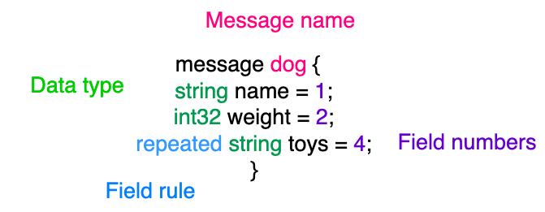
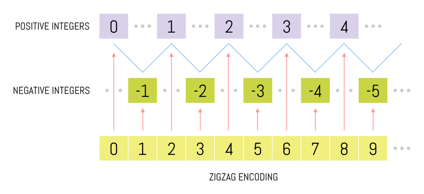

Protocol buffers
Data serialization and deserialization

Serialization formats
| CSV | Comma Separated Values. Textual. |
| JSON | Lightweight document data-interchange format. Textual. |
| Protocol Buffers | Google’s data interchange format. Binary. |
| Message Pack | Efficient JSON-like binary serialization format. Binary. |
| YAML | Identation based data serialization standard. Textual. |
| TOML | Tom’s Obvious, Minimal Language. Textual. |
JSON
{ "employee": { "name": "sonoo", "salary": 56000, "married": true } }
Benefits
- Readable
- Self contained
- Easy extensible ?
Types?
{ "value": 87 }
??

JSON types
- string
- number
- object (JSON object)
- array
- boolean
- null
Data size
Protobuf
Protocol buffers are a language-neutral, platform-neutral extensible mechanism for serializing structured data.
How protobuf works ?

Protobuf schema

Protobuf uses binary message format

that has no field names
Protobuf types
double,floatint32,int64,uint32,uint64,sint32,sint64fixed32,fixed64,sfixed32,sfixed64boolstringbytesarray,enum,hashmap
How sint32/64 encoding work ?

protoc - the protobuf compiler
- generates language specific code that codes and decodes data based on .proto files
Installation
apt install -y protobuf-compiler # debian/ubuntu brew install protobuf # mac go install google.golang.org/protobuf/cmd/protoc-gen-go@latest # for golang support
Protobuf advantages
- Schema
- Fast parsing
- Compact data storage
- Language interoperability
- Optimized functionality through automatically-generated classes.
- Backward compatibility
Using proto2 Message Types in proto3
It’s possible to import proto2 message types and use them in your proto3 messages, and vice versa. However, proto2 enums cannot be used directly in proto3 syntax (it’s okay if an imported proto2 message uses them).
When to use it ?
- Performance matters
- High volumes
- Similar messages https://developers.google.com/protocol-buffers/docs/reference/go-generated#oneof
References
- https://github.com/maximveksler/awesome-serialization
- https://docs.progress.com/en-US/bundle/openedge-abl-use-json-117/page/Benefits-of-JSON.html
- https://www.educative.io/answers/what-is-the-difference-between-protocol-buffers-and-json
- https://www.youtube.com/watch?v=uGYZn6xk-hA
- https://developers.google.com/protocol-buffers/docs/overview